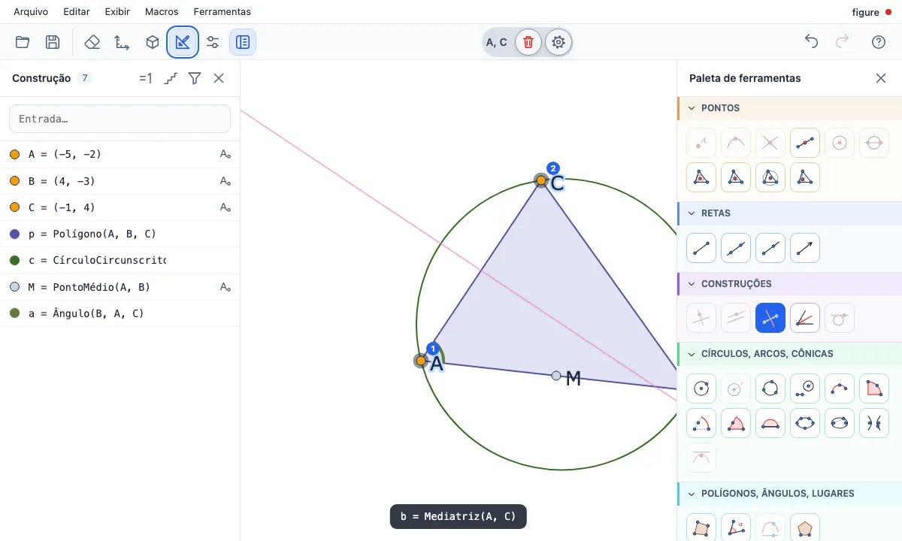

A paleta de ferramentas

Abrir a paleta
- da barra, ou Exibir › Paleta de ferramentas, abre à direita todas as ferramentas, à vista, por famílias com as cores do anel, e por último as macros da figura.
- A paleta fica visível na primeira abertura. Depois, este navegador lembra se ela está aberta ou fechada nas próximas aberturas.
- Ela ocupa o lugar do painel de propriedades: abrir um fecha o outro, sem largar a ferramenta em uso.
- Um clique no título de uma família a recolhe ou a expande; o DocGeo se lembra disso.
- Esc larga a ferramenta ou a seleção, depois fecha a paleta.
- Em uma tela pequena, a paleta cobre a figura e se fecha assim que uma ferramenta é escolhida. Abaixo de 500 px de largura, seu botão passa da barra para a direita da linha de entrada.
Construir com uma ferramenta
- Um clique em uma ferramenta a pega; uma vez pressionada, um novo clique a larga.
- A paleta contém todas as ferramentas do anel e outras (selo anel abaixo). As famílias Planos e Sólidos e as ferramentas marcadas 3D só aparecem na visualização 3D.
- A família Programas, ausente do anel, cria tartarugas, botões e programas de eventos (ver Blocos e tartaruga).
- Com a paleta aberta, um clique em um objeto o seleciona sem abrir o anel, e um clique em um lugar vazio o desseleciona. As ferramentas que não aceitam o objeto, ou a seleção múltipla, ficam desativadas.
- Com a paleta aberta e sem ferramenta, a figura apenas se manipula: um clique em um lugar vazio ou em um cruzamento não cria ponto. Para criar um, pegar a ferramenta Ponto, a primeira da paleta.
- Ao passar sobre uma ferramenta, a indicação mostra sua linha. Se os objetos selecionados lhe bastam, o objeto que ela construiria aparece esmaecido.
- O primeiro objeto selecionado ocupa qualquer lugar que seu tipo aceite: para uma perpendicular, a reta pode vir antes do ponto.
- Os argumentos também se selecionam no painel “Construção”: as linhas dos objetos que a ferramenta aceita ficam destacadas em verde, as outras esmaecidas. Um objeto oculto também pode ser selecionado ali. Um ponto só é selecionado ali se já existir, e dois objetos dão todos os seus pontos de interseção. Enquanto a ferramenta está ativa, um clique numa linha não a altera. Uma linha já selecionada fica azul, com seu lugar no comando (1, 2…).
- A ferramenta é persistente: depois de cada objeto, ela espera de novo seu primeiro argumento. Seu botão fica pressionado e a barra mostra uma faixa com Concluído.
- Um argumento selecionado com Shift é mantido: a ferramenta o retoma depois de cada objeto, até que se saia dela. Shift-clique no eixo de uma simetria e depois um clique em cada objeto a transformar; o mesmo para o centro de círculos concêntricos. O botão Manter d da instrução faz o mesmo (com o dedo, por exemplo); Mudar d o pede de novo. Nem para a ferramenta do anel, nem para os objetos selecionados antes da ferramenta.
- Saída: Concluído, Esc, o ✕ da indicação, um novo clique na ferramenta, a borracha, o passo a passo ou um clique na linha de entrada. Desfazer, refazer, as propriedades e a visualização 3D mantêm a ferramenta.
Com uma seleção
Os objetos selecionados antes tornam-se os argumentos da ferramenta escolhida: ver Construir por seleção múltipla.
Transformar um objeto
- Uma transformação toma primeiro o que a define (centro, eixo, vetor, círculo) e depois o ponto ou o objeto a transformar: segmento, reta, semirreta, vetor, polígono, círculo, arco, cônica, gráfico de função, lugar geométrico; em 3D também um plano, uma esfera, um poliedro (exceto por uma inversão).
- Sob o ponteiro, um ponto tem prioridade, depois o objeto; no vazio, um ponto é criado. Ao passar por cima, a imagem aparece em tom claro.
- A imagem é da mesma natureza que o objeto: um polígono para um polígono, um círculo para um círculo… Um gráfico de função, um lugar geométrico ou um arco de cônica têm como imagem um lugar geométrico.
- Por uma inversão, uma reta ou um círculo tem como imagem um círculo, ou uma reta se passa pelo centro; um polígono, um polígono de lados curvos.
- A imagem retoma a cor, o preenchimento, o tamanho, a opacidade e o tracejado do seu objeto. Ela não se arrasta, mas um ponto pode ser colocado sobre ela.
- Para transformar vários objetos, selecionar o centro ou o eixo com Shift (argumento mantido).
Todas as ferramentas
Para cada ferramenta: o que se seleciona e a linha escrita.
Pontos
-
PontoO ponto que se toca: livre num lugar vazio, sobre um objeto ou na interseção de dois objetos.
A = (x, y) -
Ponto em objetoanelUm objeto: o ponto sobre esse objeto, onde ele é tocado. Um clique num lugar vazio não faz nada.
Ponto(c, t) -
InterseçãoanelUm cruzamento com um só toque: esse ponto; ou os dois objetos um depois do outro: todos os seus pontos de interseção, como no GeoGebra (dois para uma reta e um círculo, mesmo que ainda não se cortem).
Interseção(a, b) -
PontoMédioanelDois pontos, ou um segmento.
PontoMédio(A, B) -
CentroanelUm círculo: seu centro.
Centro(c) -
OutraInterseçãoDois objetos e depois um ponto já colocado numa de suas interseções: o ponto de interseção mais distante dele.
OutraInterseção(a, b, P) -
IncentroTrês pontos, vértices de um triângulo: o centro do seu círculo inscrito.
Incentro(A, B, C) -
BaricentroTrês pontos: o baricentro do triângulo.
Baricentro(A, B, C) -
CircuncentroTrês pontos: o centro do círculo circunscrito.
Circuncentro(A, B, C) -
OrtocentroTrês pontos: o ortocentro do triângulo.
Ortocentro(A, B, C)
Retas
-
SegmentoanelDois pontos, suas extremidades.
Segmento(A, B) -
RetaanelDois pontos da reta.
Reta(A, B) -
SemirretaanelDois pontos: a origem e depois um ponto da semirreta.
Semirreta(A, B) -
VetoranelDois pontos: a origem e depois a extremidade.
Vetor(A, B)
Construções
-
PerpendicularanelUm ponto e uma reta, na ordem que se quiser. Em 3D, uma reta ou um plano.
Perpendicular(P, d) -
ParalelaanelUm ponto e uma reta, na ordem que se quiser.
Paralela(P, d) -
MediatrizanelDois pontos, ou um segmento.
Mediatriz(A, B) -
BissetrizanelTrês pontos: um ponto do primeiro lado, o vértice, um ponto do segundo lado.
Bissetriz(A, O, B) -
TangenteUm ponto e depois um círculo, uma cônica ou o gráfico de uma função. A ferramenta dá a tangente n.º 1; troque esse número por 2 na linha para a outra.
Tangente(P, c, 1)
Círculos, arcos, cônicas
-
Círculo (centro e ponto)anelO centro e depois um ponto do círculo.
Círculo(O, A) -
Círculo (centro e raio)anelSó o centro: no anel, manter o ícone premido, mover o rato ou o dedo e soltar para fixar o raio. No menu ou na paleta, o raio inicial é de cerca de 150 píxeis. Depois pode ser alterado arrastando o círculo ou na sua linha.
-
CírculoCircunscritoanelTrês pontos do círculo.
CírculoCircunscrito(A, B, C) -
CompassoDois pontos que dão o raio e depois o centro.
Compasso(A, B, O) -
Círculo (centro, direção e raio)3DO centro e depois uma reta (o eixo) ou um plano (paralelo ao círculo), incluindo o piso. Raio de cerca de 150 pixels.
Círculo(O, 3.8, d) -
Círculo (eixo e ponto)3DUma reta, o eixo, e depois um ponto do círculo.
Círculo(d, P) -
ArcoTrês pontos: o início, um ponto de passagem, o fim (em 3D, no plano deles). Ou um círculo ou uma elipse e depois o início e o fim (sentido anti-horário).
Arco(A, B, C),Arco(c, P, Q) -
SetorComo o arco, três pontos, ou um círculo ou uma elipse e dois pontos: o setor que ele delimita.
Setor(A, B, C),Setor(c, P, Q) -
ArcoCentroO centro, o início e depois um ponto da semirreta onde o arco termina (sentido anti-horário). Em 3D, o arco do ângulo AMB, no seu plano.
ArcoCentro(M, A, B) -
SetorCentroComo
ArcoCentro: o setor.SetorCentro(M, A, B) -
SemicírculoDois pontos, extremidades do diâmetro: o semicírculo à esquerda de [AB].
Semicírculo(A, B) -
CônicaCinco pontos da cônica. A partir do segundo, a pré-visualização mostra a cônica mais próxima de um círculo.
Cônica(A, B, C, D, E) -
ElipseOs dois focos e depois um ponto da elipse.
Elipse(F, G, P) -
HipérboleOs dois focos e depois um ponto da hipérbole.
Hipérbole(F, G, P) -
ParábolaO foco e depois a diretriz.
Parábola(F, d)
Polígonos, ângulos, lugares
-
PolígonoanelOs vértices um a um e depois de novo o primeiro para fechar.
Polígono(A, B, C) -
ÂnguloanelTrês pontos: um ponto do primeiro lado, o vértice, um ponto do segundo lado.
Ângulo(A, O, B) -
LugarGeométricoanelUm ponto que depende de um ponto sobre objeto: seu lugar quando esse ponto percorre seu objeto.
LugarGeométrico(M, P) -
PolígonoRegularDois vértices consecutivos: a ferramenta dá um quadrado; troque o número de lados na linha.
PolígonoRegular(A, B, 4)
Transformações
-
Simetria centralanelO centro e depois o ponto ou o objeto a transformar.
Reflexão(O, P) -
Simetria axialanelO eixo e depois o ponto ou o objeto a transformar.
Reflexão(d, P) -
RotaçãoO centro e depois o ponto ou o objeto: um quarto de volta, que se altera na linha.
Rotação(O, P, 90) -
TranslaçãoO vetor e depois o ponto ou o objeto.
Translação(u, P) -
HomotetiaO centro e depois o ponto ou o objeto: uma razão de 2, que se altera na linha.
Homotetia(O, P, 2) -
InversãoO círculo de inversão e depois o ponto ou o objeto.
Inversão(c, P)
Planos
-
Plano3DTrês pontos, ou um ponto e uma reta.
Plano(A, B, C) -
PlanoParalelo3DUm ponto e um plano (incluindo o piso): o plano paralelo que passa pelo ponto.
PlanoParalelo(A, p) -
PlanoOrtogonal3DUm ponto e uma reta: o plano ortogonal à reta.
PlanoOrtogonal(A, d)
Sólidos
-
Esferaanel3DO centro e depois um ponto da esfera.No anel de ferramentas de um ponto, fica junto aos círculos.
Esfera(O, A) -
Cilindro3DDois pontos, extremidades do eixo. Raio de cerca de 150 pixels.
Cilindro(A, B, 3.8) -
Cone3DO centro da base e depois o vértice. Raio de cerca de 150 pixels.
Cone(A, B, 3.8) -
Cubo3DDois pontos de um mesmo plano ou da mesma altura; senão, três pontos (veja o 3D).
Cubo(A, B, C) -
Prisma3DUm polígono, a base, e depois um ponto, vértice da face oposta.
Prisma(p, P) -
Pirâmide3DUm polígono, a base, e depois o vértice.
Pirâmide(p, S) -
Seção3DUm sólido (esfera, cilindro, cone, poliedro) e um plano, na ordem que se quiser.
Seção(s, p) -
Planificação3DUm cubo, um prisma ou uma pirâmide: sua planificação.
Planificação(c, 1)
Programas
-
Novo programaAbre um programa vazio nas propriedades.
-
TartarugaUm ponto, ou um lugar vazio que cria um: a tartaruga que parte desse ponto, aberta em blocos.
TURTLE_INIT("A", A) -
BotãoO lugar da sua seta: o botão, com o seu programa aberto em blocos.
Botão("Executar") -
Quando o objeto for arrastadoUm ponto que possa ser arrastado: o programa executado quando for arrastado, aberto em blocos.
-
Quando o objeto for pressionadoUm ponto que possa ser arrastado: o programa executado quando for pressionado, aberto em blocos.
-
Quando o objeto for soltoUm ponto que possa ser arrastado: o programa executado quando for solto, aberto em blocos.
-
Quando o valor mudarUma expressão: o programa executado quando o seu valor mudar, aberto em blocos.
Macros
-
Nova macroOs objetos selecionados como primeiros iniciais: a definição de uma macro; seguem as macros da figura (ver As macros).
As transformações constroem a imagem de um ponto ou de um objeto
(veja
Transformar um objeto). Só
pelo teclado: PontoFixo, Vértice,
ControleDeslizante, Lista, as
interseções no espaço, Elipse(F, G, a) e
Hipérbole(F, G, a) (veja
Os comandos).